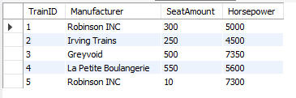

Tietokannan optimointi
NÄKYMÄT
Luodaan näkymä, jolla voidaan katsella kaikki junat ja niiden tekniset tiedot nopeasti:
CREATE VIEW Trains
AS SELECT TrainID, Manufacturer, SeatAmount, Horsepower FROM train;
-- Käyttö
SELECT * FROM Trains;

INDEKSOINTI
Luodaan tietokantaan seuraaville tauluille ja niiden sarakkeille indeksit suorituskyvyn parantamista varten.
- 'Freight' -taulu
CREATE INDEX i_freightCategory ON freight(Category);
CREATE INDEX i_freightType ON freight(Type);
CREATE INDEX i_freightID ON freight(freightID);
- 'Person' -taulu
CREATE INDEX i_personID ON Person(PersonID);
CREATE INDEX i_personFirsname ON Person(Firstname);
CREATE INDEX i_personLastname ON Person(Lastname);
- 'Receipt' -taulu
CREATE INDEX i_receiptID ON receipt(ReceiptID);
CREATE INDEX i_receiptSeat ON receipt(Seat);
CREATE INDEX i_receiptPrice ON receipt(Price);
- 'Trip' -taulu
CREATE INDEX i_tripID ON trip(TripID);
CREATE INDEX i_tripEstimatedTime ON trip(EstimatedTime);
CREATE INDEX i_tripTotalDistance ON trip(TotalDistance);
CREATE INDEX i_tripArrivalStation ON trip(ArrivalStation);
CREATE INDEX i_tripDepartingStation ON trip(DepartingStation);
- 'train' -taulu
CREATE INDEX i_trainID ON train(TrainID);
TRANSAKTIOT
Transaktiota pitää käyttää lipunoston yhteydessä. Tämä tehdään siksi, että tietojen tallentuminen onnistuisi ongelmitta.
Esimerkki:
BEGIN;
INSERT INTO receipt (ReceiptID, Seat, Price, Person_PersonID) VALUES (7, '5-21', 42, 2);
INSERT INTO trip_has_receipt (Trip_TripID, Receipt_ReceiptID) VALUES (2, 7);
COMMIT;
TRIGGERIT
Luon triggerin seuraaville tauluille alla mainituilla ehdoilla:
- Receipt
- Price (Price > 0)
Tällä varmistetaan, että matkalipun hinta ei ole negatiivinen.
DELIMITER $$
CREATE TRIGGER Receipt
BEFORE INSERT ON Receipt
FOR EACH ROW
BEGIN IF!(NEW.Price > 0) THEN
CALL `ERROR: Price cannot be lower than 0!`;
END IF;
END$$
DELIMITER ;
TRIGGERIN TESTAUS
MariaDB [rautatiejarjestelma_db]> INSERT INTO receipt (ReceiptID, Seat, Price, Person_PersonID) VALUES(8, '2-14', 0, 1);
ERROR 1305 (42000): PROCEDURE rautatiejarjestelma_db.ERROR: Price cannot be lower than 0! does not exist
MariaDB [rautatiejarjestelma_db]> INSERT INTO receipt (ReceiptID, Seat, Price, Person_PersonID) VALUES(8, '2-14', 35, 1);
Query OK, 1 row affected (0.002 sec)